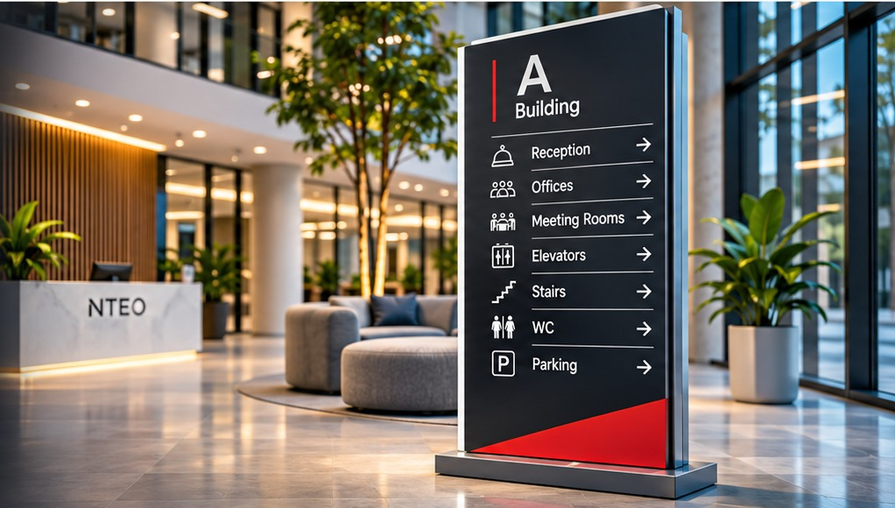

Обсуждаем задачу
Вы присылаете идею, макет, размеры или фотографию объекта.

NTEO / VISUAL INFRASTRUCTURE / CYPRUS
От первой наклейки до комплексной навигации здания. Проектируем, производим и устанавливаем визуальные решения, которые помогают компаниям выглядеть профессионально и быть заметными.

01 / НАПРАВЛЕНИЯ NTEO
Выберите нужную услугу — на отдельной странице подробно показаны решения, материалы, варианты применения и способы заказа.

Виниловые надписи, логотипы и наклейки для витрин, окон, автомобилей и интерьеров.
Перейти к услуге ↗
Полноцветная печать на виниловой плёнке для витрин, транспорта, стен, рекламы и оформления пространств.
Перейти к услуге ↗
Стелы, директории, планы этажей, указатели, таблички кабинетов и доступные маршруты.
Перейти к услуге ↗
Номерки, дверные подвесы, обозначения гостевых зон, ресторанов, СПА и служебных помещений.
Перейти к услуге ↗02 / ПОДХОД NTEO
Мы соединяем визуальную идею, подходящие материалы и производственное исполнение. Для небольшого заказа или комплексного проекта подбираем решение под задачу, архитектуру и фирменный стиль объекта.
03 / КАК МЫ РАБОТАЕМ
Расскажите, что нужно изготовить. Мы уточним размеры, материалы, место установки и подготовим предложение по вашему проекту.
Вы присылаете идею, макет, размеры или фотографию объекта.
Согласуем материал, конструкцию, отделку, сроки и стоимость.
Готовим макет и производим изделие с учётом технических требований.
Организуем выдачу, доставку или монтаж, если он предусмотрен проектом.
04 / ГЕОГРАФИЯ
Принимаем запросы на изготовление визуальных материалов и навигационных решений в основных городах Кипра. Возможность выезда и монтажа подтверждаем индивидуально — с учётом адреса, объёма и типа работ.
05 / ОБСУДИМ ВАШ ПРОЕКТ
Отправьте описание, размеры или фотографию — подскажем, какое решение подойдёт и какие данные нужны для расчёта.
NTEO / CYPRUS
NTEO объединяет несколько направлений производства и оформления коммерческих пространств: плоттерную порезку виниловых наклеек, широкоформатную печать на самоклеющейся плёнке, изготовление систем визуальной навигации зданий, а также гостиничных табличек и указателей. Помогаем оформить витрины, окна, автомобили, офисы, магазины, бизнес-центры, отели, курортные комплексы и общественные пространства. Подбираем материалы и способы изготовления под конкретную задачу. Работаем с запросами из Лимассола, Пафоса, Никосии, Ларнаки, Айя-Напы, Протараса и других районов Кипра; условия доставки и монтажа согласовываются для каждого проекта.